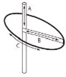
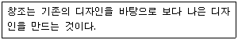
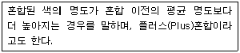
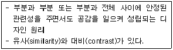
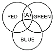
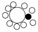
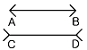
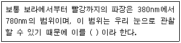

웹디자인기능사 (2010-07-11 기출문제)
1과목: 디자인 일반
1. 색의 수축, 팽창의 효과에 가장 큰 영향을 주는 요소는?
- 색약
- 명도
- 잔상
- 중량
(정답률: 82%)

2. 면(plane)에 대한 설명으로 틀린 것은?
- 폭은 있으나 길이가 없다.
- 이동하는 선의 자취가 면을 이룬다.
- 공간을 구성하는 단위이다.
- 넓이는 있으나 두께는 없다.
(정답률: 83%)
3. 디자인에서 사용되는 용어 설명으로 잘못된 것은?
- 2차원의 화면이나 형식 위에, 3차원의 공간에 존재하는 형(shape)이나 형태(form)를 표시하는 것을 투시(perspective)라 한다.
- 장소나 위치 또는 방위가 변화되는 과정이나 움직임을 시차(parallax)라고 한다.
- 점진적 변화, 규칙적 단계에 의해 진행되는 변화과정을 그라데이션(gradation)이라고 한다.
- 시각적 영역 안에서 어떤 형이나 형태가 다른 형이나 형태를 부분적으로 덮어 감추어지는 현상을 중첩이라 한다.
(정답률: 63%)
4. 병원 수술실의 색채계획으로 가장 적당한 배색은?
- 갈색계열
- 무채색계열
- 녹색계열
- 보라색계열
(정답률: 88%)
5. 색입체를 단순화한 각 부분의 명칭이 맞는 것은? (단, A는 입체의 상하, /B는 입체의 가로방향, C는 입체의 둘레를 의미한다.)

- A-색상, B-채도, C-명도
- A-채도, B-명도, C-색상
- A-명도, B-색상, C-채도
- A-명도, B-채도, C-색상
(정답률: 77%)
6. 기계화와 대량생산에 의한 생활용품의 품질 저하에 반대하여 윌리엄 모리스를 중심으로 영국에서 일어난 수공예 부흥 운동은?
- 독일공작연맹운동
- 미술공예운동
- 미래파운동
- 바우하우스
(정답률: 87%)
7. 디자인 원리 중 균형(balance)에 해당하지 않는 것은?
- 대칭
- 비례
- 율동
- 주도와 종속
(정답률: 65%)
8. 디자인의 형식적 요소에 포함되지 않는 것은?
- 형
- 색
- 질감
- 용도
(정답률: 80%)
9. 다음에 해당하는 디자인의 기본조건은?

- 합목적성
- 심미성
- 경제성
- 독창성
(정답률: 74%)
10. 유채색에서 볼 수 있는 대비로 연속대비라고도 하며, 잔상 효과와 가장 밀접한 관련이 있는 것은?
- 동시대비
- 계시대비
- 채도대비
- 명도대비
(정답률: 69%)
11. 그래픽 심벌(symbol)이 가져야 할 조건이 아닌 것은?
- 대중성 및 사용의 편리성
- 구성의 간결성
- 세련된 디자인
- 디자인의 모호성
(정답률: 82%)
12. 다음이 설명하고 있는 색의 혼합은?

- 감산 혼합
- 가산 혼합
- 중간 혼합
- 회전 혼합
(정답률: 92%)
13. 다음이 설명하고 있는 디자인 원리는?

- 통일
- 변화
- 균형
- 조화
(정답률: 79%)
14. 다음 색광혼합의 2차 혼합 색으로(A)에 알맞은 색상은?

- 흰색(white)
- 시안(cyan)
- 노랑(yellow)
- 마젠타(matenta)
(정답률: 78%)
15. 감산혼합에 사용되는 Cyan, Magenta, Yellow 의 3원색으로 만들 수 없는 색은??
- Blue
- White
- Red
- Green
(정답률: 90%)
16. 제품 디자인 과정 중 「완성 예상도」라고도 하며 실물처럼 충실하고 정확히 표현하는 것을 무엇이라 하는가?
- 렌더링(RENDERING)
- 드로잉(DRAWING)
- 스케치(SKETCH)
- 콤바인 페인팅(COMBINE PAINTING)
(정답률: 84%)
17. 다음과 가장 관계있는 디자인 원리는?

- 조화
- 통일
- 점증
- 강조
(정답률: 93%)
18. 색의 동시대비 중 색상대비에 대한 설명으로 틀린 것은?
- 명도와 채도가 비슷한 두 가지 이상의 색이 인접해 있을 때 색상의 차이가 커 보이는 현상이다.
- 색상대비는 보색일 경우에 더욱 크게 나타난다.
- 자극이 약한 색상은 자극이 강한 색상에 영향을 받게 된다.
- 색상이 가깝게 인접해 있을수록 대비현상이 약하게 나타나고, 서로 멀리 떨어지면 강하게 나타난다.
(정답률: 73%)
19. 다음 그림에서 나타나는 착시 현상은?

- 방향의 착시
- 대비의 착시
- 분할의 착시
- 길이의 착시
(정답률: 88%)
20. 다음 ( )안에 알맞은 용어는?

- 감마선
- 적외선
- 자외선
- 가시광선
(정답률: 90%)
2과목: 인터넷 일반
21. 인터넷 검색엔진에 속하지 않는 것은?
- 오페라(Opera)
- 심마니(Simmani)
- 알타비스타(Altavista)
- 구글(Google)
(정답률: 58%)
22. 자바스크립트의 함수 중 사용자로부터 임의의 문자를 입력받기 위한 창을 화면에 띄워 입력한 문자열을 사용할 수 있도록 하는 것은?
- prompt()
- eval()
- confirm()
- alert()
(정답률: 58%)
23. 다음 중 국내 인터넷 역사에서 가장 나중에 이루어진 것은?
- KT(한국통신)에서 본격적인 상용 접속 서비스 제공
- 연구망에서 인터넷 연결(HANA/SDN : 56kbps)
- 서울대-KIET간 TCP/IP로 SDN구축
- 교육연구망 구성(ARPANet, BITNet과 연결)
(정답률: 70%)
24. 개방형 시스템의 상호접속을 위한 참조모델로 ISO에서 제정한 것은?
- OSI 7 Layer
- Kermit
- Proxy
- Archie
(정답률: 78%)
25. 다음 중 웹 브라우저의 기능이 아닌 것은?
- 웹 페이지 열기
- 자주 방문하는 URL의 기억 및 관리
- 소스파일(HTML) 보기
- 실시간 동영상 캡쳐 및 전송
(정답률: 86%)
26. 자바스크립트(Javascript)에 대한 설명으로 틀린 것은?
- 자바스크립트를 지원하는 브라우저만 있으면 모든 운영체제에서 실행된다.
- 자바스크립트는 소스프로그램을 컴파일 한 후 HTML문서에 삽입한다.
- 자바스크립트 객체는 자신의 프로토타입 객체에 있는 프로퍼티를 상속 받는다.
- 클라이언트측 자바스크립트는 HTML문서 내에 적용하여 브라우저를 제어하는데 사용된다.
(정답률: 51%)